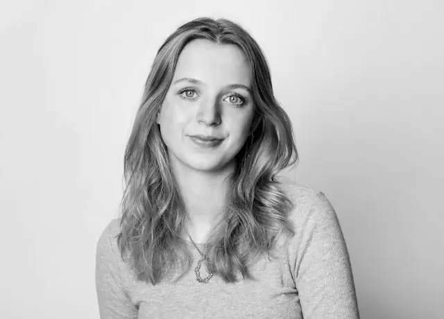

Portfolio af Clara Victoria Muxoll Storkfelt

Velkommen til mit portfolio for 1. semester. Her præsenteres et samlet overblik over mit arbejde og min læring gennem første semester på multimediedesignuddannelsen på EK. Portfolioet giver indblik i mine arbejdsprocesser, refleksioner og faglige overvejelser i forbindelse med de forskellige temaer, vi har arbejdet med.